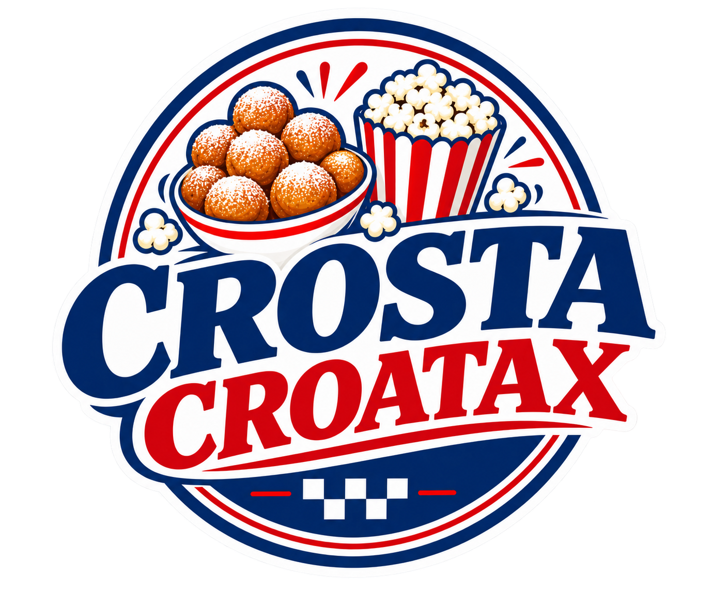

Aprender, criar
e transformar.
Um espaço dedicado aos projetos, conhecimentos e experiências desenvolvidos ao longo do ano. Explore meus trabalhos e conheça um pouco da minha trajetória escolar.
EXPLORAR TRABALHOS →Meus trabalhos
Cada projeto representa uma etapa do meu aprendizado.

01 ↗Costa Croata
Um projeto dedicado à cultura, à história e à gastronomia da Croácia, com destaque para o tradicional Fritule.
ACESSAR PROJETO → 02
↗
02
↗
Projeto de Informática
Espaço para apresentar outro projeto desenvolvido durante o curso técnico.
CONHECER TRABALHO → 03
↗
03
↗
Projeto de Pesquisa
Apresentação de atividades, pesquisas e conhecimentos desenvolvidos em sala.
CONHECER TRABALHO → 04
↗
04
↗
Outros projetos
Um espaço para adicionar outros trabalhos, apresentações e atividades do ano letivo.
CONHECER TRABALHO →Conhecimento que vai além da sala de aula.
Este portfólio reúne trabalhos e projetos realizados ao longo do ano letivo, mostrando conhecimentos adquiridos, criatividade, dedicação e desenvolvimento acadêmico.
A proposta é organizar essas experiências em um único lugar, facilitando a apresentação e a visualização de cada projeto.
Cada projeto é uma oportunidade de aprender algo novo.
PORTFÓLIO ESCOLAR